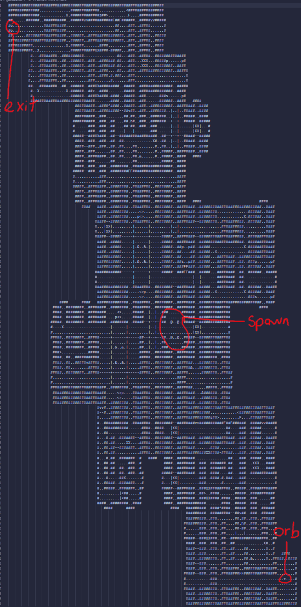

We are very close to completing the MVP, and a lot of us have started to
move on to working on more features for the game:
Implemented Dungeon Master trap setting and maze POV
Even more items and potions
Dimensional audio implementation
Updated maze generation + orb/key item for escape
First enemy: the slime
Solid progress on animation
Improved torch flickering and rendering logic
Textures / model animations
Group Morale
Some of our members seem to be a bit nervous, especially since we're less
than three weeks out until the demo, but overall there has been a lot of
good progress made!
Gallery
A mini lecture explaining some of the undefined behaviors: currently
filesize is too large, so working on a fix
Some of the beautiful original soundtrack courtesy of Gil!

A large generated maze. The annotations represent the spawn area,
exit, and orb placement.
The slimes remind me of slightly niche blocky sandbox game...
Test animation works! Look at that orc goMore eldritch horrors thanks to AssimpFinally got our player models working!
A test run of the new torch generation and lighting
This is how Zeus (aka DM) would be overseeing the maze
Technical test for directional audio